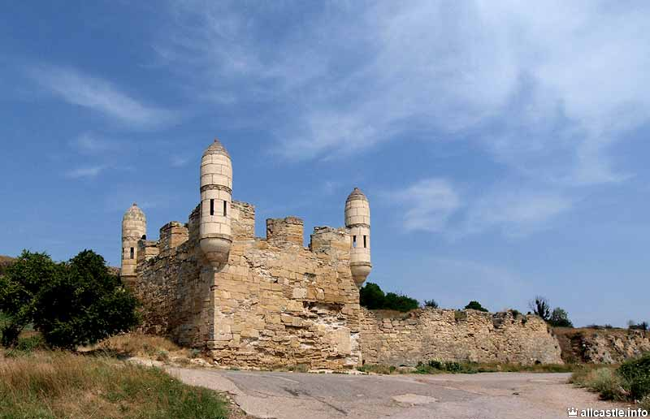
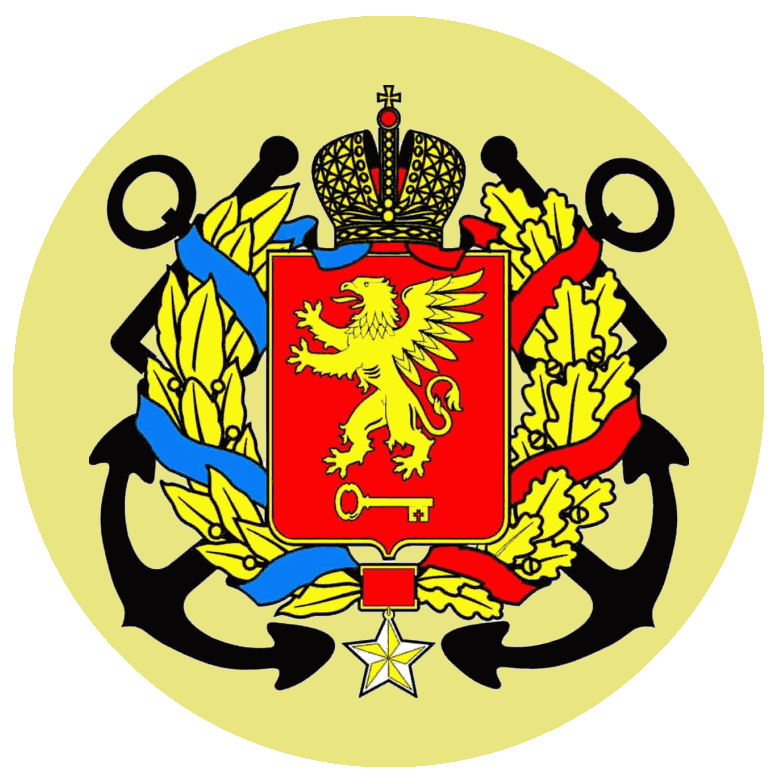

О городе:
Керчь - один из самых старейших городов в мире. В этом году он справит свое 2612-летие. Его история начинается более 26 веков назад когда под названием Пантикопей он был столицей Боспорского царства.За многие века своего существования этот город неоднократно менял хозяев.
Он был и греческим, и римским, и византийским, и генуэзским и турецким. А с 1774 года Керчь, после многолетих разборок с Турцией, стал первым российским городом в Крыму.
О далеком турецком прошлом еще и сейчас напоминает крепость Ени-Кале, расположенная на европейском берегу керченского пролива - мысе Тархан.
Её хорошо видно с проходящих мимо кораблей. Которая была построена в XIV-XV веке, при чем в качестве основного материала использовались развалины более древнего городища, которое находилось рядом.

Город двух морей - Чёрного и Азовского, Керчь и в составе Российского государства многое повидал. Это и революция 1917 года, когда не на жизнь, а на смерть сошлись русские против русских. Но несмотря на разрушительную революцию и гражданскую войну Керчь вскоре стал крупным индустриальным центром и цветущим городом Крыма.

Современная Керчь - это город развитой горнорудной, судостроительной промышленности, один из крупных центров рыболовства. Один их красивейших городов Крыма. Город-Герой.
